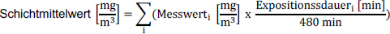
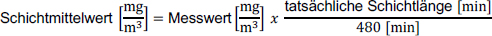
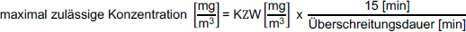
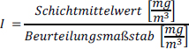
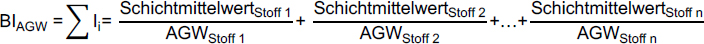

(1) Beurteilungsmaßstäbe sind bei der Beurteilung der inhalativen Exposition an Arbeitsplätzen im Rahmen der Gefährdungsbeurteilung und zur Überprüfung der Wirksamkeit der Schutzmaßnahmen heranzuziehen. Es gibt die folgenden verbindlichen Beurteilungsmaßstäbe:
(2) Stehen keine verbindlichen Beurteilungsmaßstäbe zur Verfügung, können folgende Beurteilungsmaßstäbe zur Bewertung der Exposition herangezogen werden:
(1) Beurteilungsmaßstäbe nach Abschnitt 5.1 sind in der Regel für einen Beurteilungszeitraum von 8 Stunden als Schichtmittelwerte definiert. Dies soll die Dauer einer Arbeitsschicht widerspiegeln.
(2) Bei einer Mittelungsdauer von 8 Stunden entspricht das Messergebnis dem Schichtmittelwert.
(3) Bei einer von der Schichtlänge abweichenden Mittelungsdauer gilt Folgendes (siehe auch Anhang 2 Abschnitt 4.3):

(4) Wenn die Schichtlänge von 8 h abweicht (z. B. bei abweichenden Arbeitszeitregelungen), ist die maximal mögliche Schichtdauer zur Beurteilung heranzuziehen. Der Messwert für diese Schichtlänge ist auf eine achtstündige Exposition (Schichtmittelwert) umzurechnen:

(1) Kurzzeitwerte (KZW) beziehen sich in der Regel auf einen Beurteilungszeitraum von 15 Minuten. Sie werden als Überschreitungsfaktor angegeben, der zur Berechnung der Kurzzeitwertkonzentration mit dem Beurteilungsmaßstab zu multiplizieren ist. Bei der Erhebung des Befundes sind zusätzlich die Dauer und der zeitliche Abstand zwischen den Expositionsspitzen innerhalb der Schicht zu berücksichtigen.
(2) Bei lokal wirksamen oder atemwegssensibilisierenden Stoffen (Kurzzeitwertkategorie I) ist ein Beurteilungszeitraum von 15 min festgelegt.
(3) Bei resorptiv wirksamen Stoffen (Kurzzeitwertkategorie II) sind auch längere Überschreitungsdauern zulässig. In diesen Fällen ist die Höhe der maximal zulässigen Konzentration in Abhängigkeit von der tatsächlichen Überschreitungsdauer zu berechnen:

(4) Für Stoffe ohne Kurzzeitwert dürfen Expositionen den Zahlenwert des Beurteilungsmaßstabes höchstens um den Faktor 8 übersteigen.
(5) Für krebserzeugende Stoffe ergänzen Kurzzeitwerte die Schichtmittelwerte, indem sie Konzentrationsschwankungen oberhalb
nach oben hin sowie in ihrer Dauer begrenzen. Für die Akzeptanzkonzentration sind keine Kurzzeitwerte festgelegt.
(6) Für krebserzeugende Stoffe mit Toleranzkonzentration oder Beurteilungsmaßstäben aus stoffspezifischen Technischen Regeln wird standardmäßig ein Überschreitungsfaktor von 8 für einen Beurteilungszeitraum von 15 Minuten festgelegt; stoffspezifisch sind Überschreitungsfaktoren kleiner 8 möglich. Ein Mindestzeitraum zwischen den einzelnen Kurzzeitwertphasen wird nicht festgelegt.
Momentanwerte (Angabe =X= in TRGS 900) dürfen zu keinem Zeitpunkt überschritten werden. Aus messtechnischen Gründen soll jedoch der Beurteilungszeitraum nicht unter einer Minute liegen.
(1) Zur Vergleichbarkeit von Ermittlungsergebnissen wird aus dem Schichtmittelwert der Stoffindex I berechnet.

(2) Bei Messergebnissen unterhalb der Bestimmungsgrenze des Messverfahrens wird der Stoffindex mit der Bestimmungsgrenze berechnet. Der Stoffindex wird dann mit "≤" gekennzeichnet.
(3) Für Kurzzeitwerte wird kein Stoffindex berechnet.
(4) Kann ein Gefahrstoff nicht spezifisch bestimmt werden, ist das aus dem unspezifischen Messverfahren resultierende Messergebnis für die Berechnung des Stoffindexes heranzuziehen. Kommen mehrere Beurteilungsmaßstäbe in Frage, ist für die Bewertung nur der größte Stoffindex zu berücksichtigen (z. B. Calciumoxid und Calciumdihydroxid).
(5) Hat eine chemische Verbindung keinen eigenen Beurteilungsmaßstab, sondern nur ihre Bestandteile, ist für die Bewertung nur der Bestandteil mit dem größten Stoffindex zu berücksichtigen (z. B. Zinn(II)fluorid).
(1) Treten in der Luft am Arbeitsplatz während einer Schicht gleichzeitig oder nacheinander mehrere Stoffe oder Gemische von Stoffen auf, für die Arbeitsplatzgrenzwerte (AGW) festgelegt sind, werden die Stoffindizes dieser Stoffe/Gemische addiert. Das Ergebnis ist der Bewertungsindex BI:

Von diesem Bewertungsverfahren kann im Einzelfall abgewichen werden, wenn dies arbeitsmedizinisch oder toxikologisch begründet werden kann.
(2) Tragen während einer Schicht neben Stoffen mit Arbeitsplatzgrenzwert gleichzeitig oder nacheinander Stoffe oder Gemische zur Exposition im Arbeitsbereich bei, für die ein Beurteilungsmaßstab nach Abschnitt 5.1 Absatz 2 veröffentlicht ist, wird empfohlen, diese bei der Berechnung eines Bewertungsindexes auf Grundlage von Absatz 1 Satz 3 ebenfalls zu berücksichtigen.
(3) Stoffindizes ≥ 0,05 müssen bei der Berechnung des Bewertungsindexes berücksichtigt werden. Stoffindizes < 0,05 können berücksichtigt werden.
(4) Wird ein geeignetes Messverfahren (siehe Anhang 2 Abschnitt 3.1 Tabelle 5 und 6) eingesetzt und liegt das Messergebnis unter der Bestimmungsgrenze, ist der Stoffindex im Bewertungsindex nicht zu berücksichtigen.
(5) Wird ein bedingt geeignetes Messverfahren (siehe Anhang 2 Abschnitt 3.1 Tabelle 5 und 6) eingesetzt und liegt das Messergebnis unter der Bestimmungsgrenze, ist der für die Bestimmungsgrenze berechnete Stoffindex im Bewertungsindex zu berücksichtigen.
(6) Die nachfolgenden Beurteilungsmaßstäbe werden nicht bei der Berechnung des Bewertungsindexes berücksichtigt:
Für die Tätigkeit bzw. den Arbeitsbereich ist die ermittelte Expositionssituation im Hinblick auf eine Gefährdung der Beschäftigten und die Wirksamkeit von Schutzmaßnahmen schrittweise anhand der folgenden Bewertungskriterien zu beurteilen:
| a) | Ist der Stoffindex I ≤ 1, lautet das Ergebnis: Einhaltung des Arbeitsplatzgrenzwertes. |
| b) | Ist der Stoffindex I > 1, lautet das Ergebnis: Überschreitung des Arbeitsplatzgrenzwertes. |
| a) | Ist der Stoffindex I ≤ 1, lautet das Ergebnis: Einhaltung des Beurteilungsmaßstabes. |
| b) | Ist der Stoffindex I > 1, lautet das Ergebnis: Überschreitung des Beurteilungsmaßstabes. |
| a) | Ist der Schichtmittelwert kleiner oder gleich der Akzeptanzkonzentration, lautet das Ergebnis: Einhaltung der Akzeptanzkonzentration. |
| b) | Ist der Schichtmittelwert größer als die Akzeptanzkonzentration und kleiner oder gleich der Toleranzkonzentration, lautet das Ergebnis: Überschreitung der Akzeptanzkonzentration und Einhaltung der Toleranzkonzentration. |
| c) | Ist der Schichtmittelwert größer als die Toleranzkonzentration, lautet das Ergebnis: Überschreitung der Toleranzkonzentration. |
| a) | in keinem 15-Minuten-Intervall der Kurzzeitwert überschritten wird und |
| b) | maximal vier 15-Minuten-Intervalle oberhalb des Beurteilungsmaßstabes nach Abschnitt 5.1 Absatz 1 oder 2 innerhalb einer Schicht auftreten und |
| c) | zwischen jeweils zwei dieser 15-Minuten-Intervalle möglichst ein zeitlicher Abstand von 60 Minuten liegt. Bei Stoffen ohne KZW (Überschreitungsfaktor 8) oder Stoffen der Kurzzeitwertkategorie II sind in Abhängigkeit von der Höhe der ermittelten Konzentration auch längere zusammenhängende Kurzzeitwertphasen bis zu maximal 120 Minuten möglich. In diesem Fall ist die maximal zulässige Konzentration gemäß Abschnitt 5.2.2 Absatz 3 zu berechnen. |
| a) | Ist der Bewertungsindex BI ≤ 1, lautet das Ergebnis: Einhaltung des Bewertungsindexes. |
| b) | Ist der Bewertungsindex BI > 1, lautet das Ergebnis: Überschreitung des Bewertungsindexes. |
| a) | durch Analogieschlüsse von vergleichbaren Tätigkeiten und Stoffen dies fachlich begründet werden kann (z. B. mit einer homologen Verbindung mit einem AGW oder einem Surrogat), |
| b) | Schutzmaßnahmen gegenüber chemischen Belastungen am Arbeitsplatz entsprechend branchen- oder tätigkeitsspezifischen Hilfestellungen (z. B. Verfahrens- und Stoffspezifische Kriterien (VSK) nach TRGS 420 "Verfahrens- und stoffspezifische Kriterien (VSK) für die Ermittlung und Beurteilung der inhalativen Exposition", Expositionsbeschreibungen der Unfallversicherungsträger, Empfehlungen Gefährdungsermittlung der Unfallversicherungsträger (EGU) [6], Branchenregelungen, Handlungsanleitungen zur guten Arbeitspraxis, Einfaches Maßnahmenkonzept Gefahrstoffe (EMKG) der BAuA [7]) eingehalten sind, |
| c) | der Stand der Technik, z. B. beschrieben in Merkblättern der Unfallversicherungsträger, Positivlisten von Geräten [8], umgesetzt ist. |
(1) Die ermittelte Exposition hat der Arbeitgeber im Hinblick auf eine Gefährdung der Beschäftigten und die Wirksamkeit der Schutzmaßnahmen zu beurteilen, wobei das Tragen von persönlicher Schutzausrüstung nicht berücksichtigt werden darf. Bei Bedarf sind weitere fachkundige Stellen hinzuzuziehen. Zur Erhebung des Befundes sind alle Bewertungskriterien gemäß Abschnitt 5.3.3 für einen zu beurteilenden Arbeitsbereich oder eine Tätigkeit zusammenzuführen und zu beurteilen. Das Ergebnis dieser Beurteilung ist der Befund. Der Befund zur Beurteilung der Schutzmaßnahmen hinsichtlich der inhalativen Exposition kann lauten:
Der Befund ist zu begründen und zu dokumentieren (siehe Abschnitt 7 und Anhang 1 Abschnitt 6). Zum Befund gehören auch Festlegungen zur Befundsicherung nach Abschnitt 6.
(2) Der Befund "Schutzmaßnahmen ausreichend" liegt vor, wenn die Maßnahmen nach § 8 der GefStoffV berücksichtigt und alle Bewertungskriterien gemäß Abschnitt 5.3.3 einschließlich der Einhaltung der Akzeptanzkonzentration erfüllt sind und dies beispielsweise anhand eines der nachfolgenden Kriterien auch zukünftig begründet werden kann:
(3) Der Befund "Schutzmaßnahmen ausreichend" kann auch getroffen werden, wenn die Toleranzkonzentration eingehalten wird und dargelegt werden kann, dass alle technischen, organisatorischen und hygienischen Schutzmaßnahmen ausgeschöpft und weitere Schutzmaßnahmen nach dem Stand der Technik absehbar nicht möglich sind. Gemäß A2.2.2 Tabelle 4 werden Kontrollmessungen empfohlen.
(4) Bei Stoffen mit Beurteilungsmaßstäben aus stoffspezifischen TRGS liegt der Befund "Schutzmaßnahmen ausreichend" vor, wenn der Beurteilungsmaßstab eingehalten wird und die Vorgaben der jeweiligen stoffspezifischen Schutzmaßnahmen-TRGS erfüllt sind.
(5) Der Befund "Schutzmaßnahmen ausreichend" kann auch getroffen werden, wenn gewährleistet wird, dass die Verhältnisse am Arbeitsplatz repräsentativ widergespiegelt werden und
(6) Bei einer einzelnen Arbeitsplatzmessung von krebserzeugenden Stoffen mit ERB kann der Befund "Schutzmaßnahmen ausreichend" getroffen werden, wenn gewährleistet ist, dass die Verhältnisse am Arbeitsplatz repräsentativ widergespiegelt werden und der Schichtmittelwert kleiner oder gleich 0,202 der Akzeptanzkonzentration ist.
(7) Der Befund „Schutzmaßnahmen nicht ausreichend“ liegt vor, sobald eines der Bewertungskriterien gemäß Abschnitt 5.3.3 und die Anforderungen gemäß Abschnitt 5.3.4 Absatz 3 und 4 nicht erfüllt sind. Im Befund sind alle betrachteten Stoffe oder Tätigkeiten möglichst differenziert darzustellen, um expositionsmindernde Maßnahmen festlegen zu können.
(8) Ein Befund nach Absatz 2 bis 7 kann nicht abgeleitet werden, wenn z. B.
Es sind alle betrachteten Stoffe oder Tätigkeiten möglichst differenziert darzustellen, um die weitere Vorgehensweise festlegen zu können, wie der Befund "Schutzmaßnahmen ausreichend" erreicht werden kann.
(9) Lautet der Befund "Schutzmaßnahmen nicht ausreichend", sind unverzüglich expositionsmindernde Maßnahmen und anschließend eine erneute Ermittlung und Beurteilung der inhalativen Exposition vorzunehmen.
| 2 Nur bei Anwendung eines geeigneten Messverfahrens (s. Anhang 2 Abschnitt 3.1) kann dieser Wert erreicht werden. |